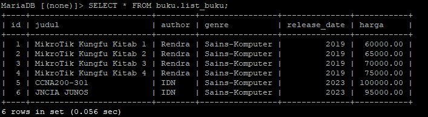
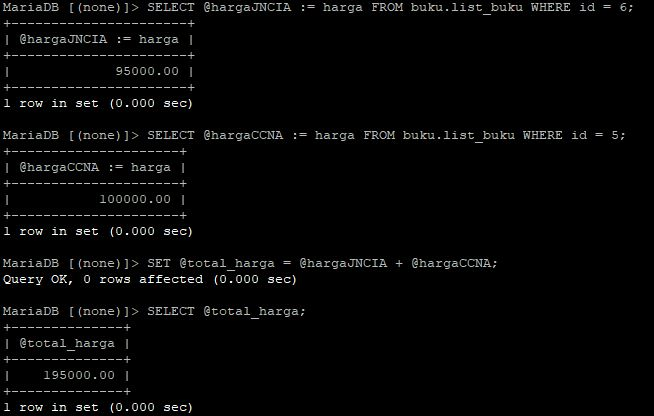

Menggunakan Variabel Di Lingkungan SQL dalam QUERY.html
Untuk membuat variable / variabel pada MySQL/MariaDB diawali dengan tanda @
CONTOH : @total_harga
Perhatikan tabel dibawah ini...

**saya menggunakan penulisan 'buku.list_buku' karena saya diluar DB buku
kita akan menggunakan studi kasus, menyimpan harga buku JNCIA JUNOS dan CCNA200-301 kedalam variabel
kemudian menambahkan harga JNCIA JUNOS dan CCNA200-301
dan terakhir menyimpan hasil penjumlahan harga kedua buku tersebut kedalam variabel....perhatikan gambar dibawah ini/i>

secara fundamental untuk mengisi nilai ke dalam variabel dibutuhkan operator penugasan '='
uniknya di MySQL/MariaDB operator penugasan ada dua ':=' dan '=' dan ini tergantung penggunaan perintah yang digunakan .... lihat gambar diatas
intinya oeprator penugasan ':=' bisa digunakan di SELECT maupun SET.
tapi operator penugasan '=' hanya bisa digunakan di SET.
jika kita menggunakan operator '=' di SELECT maka operatornya justru akan menjadi operator PEMBANDING
Penggunaan variable dalam SQL ini, dengan tujuan menghindari penulisan berulang, sehingga pada akhirnya bisa menghemat resource sistem